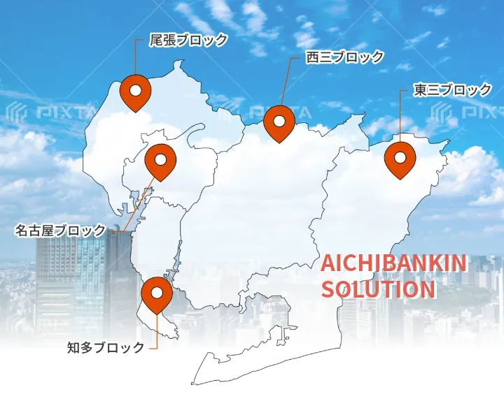

第60回 技術講習会を開催しました ― 伝統の継承と最新工法の習得に向けて



愛知県板金工業組合は区域を5ブロックに分けています。名古屋ブロック・尾張ブロック・西三ブロック・知多ブロック・東三ブロックに区域別し、更に支部が構成され31支部あります。構成員は2024年9月30日現在で297名（社）です。
交通機関
地下鉄
-
名古屋駅・桜通線（野並行）→御器所駅下車８番出口
鶴舞線（赤池又は豊田市行）→御器所駅下車１番出口 -
名古屋駅・東山線（藤ヶ丘行）→伏見駅乗換
鶴舞線（赤池又は豊田市行）→御器所駅下車１番出口
〒466-0006
愛知県名古屋市昭和区北山町3-8-6
TEL 052-732-1226
FAX 052-732-1733
E-mail aichikenban@orion.ocn.ne.jp